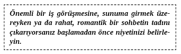

10. BÖLÜM - ETKİLEYİCİ İLETİŞİM: HATALI OLDUKLARINDA İNSANLARI DÜZELTMEK
Etkilemenin Sırları
Etkilemenin gizli tarifini ve karşı konulmaz çekiciliğin malzemelerini sonunda belirleyebiliriz. Bazı insanlarla birlikteyken iyi hissetmemizi sağlayan nedir? Biz yanlarındayken bazı insanlar nasıl oluyor da çok iyi hissetmemizi sağlıyorlar? Hatta o kadar iyi hissederiz ki daha fazlasını isteyerek karşı konulmaz bir şekilde onlara doğru çekiliriz. Bunun onlara doğuştan geldiğini veya doğal olarak edindikleri bir şey olduğunu düşünebilirsiniz. Sizinle tam anlamıyla uyuştukları için bu şekilde düşünebilirsiniz. Bu daha ziyade onların sözlerindeki ustalıkları, iletişimlerindeki dürüstlükleri ile bütünlükleri ve düşüncelerinin temelinde yatan niyetin bir sonucu olabilir. Kişisel bütünlük mevcutsa takdir, ilgi ve kabul etmeye dair kelimeler kendiliğinden gelir.
Birisiyle bir tartışmada olduğunuzu ve vermek istediğiniz mesajı anlatmakta güçlük çektiğinizi hayal edin. Siz kendi bakış açınızı çok güzel bir şekilde açıkladınız ama dinleyicinizin yine de aklı karıştı. Anlamadığı için onu kötü hissettirmenizin birçok yolu var veya o kafası karışık ve yetersiz hissetse bile kendisiyle ilgili iyi hissetmesini sağlayabilirsiniz.
“Neden anlamadığınızı anlamıyorum. Anlayabileceğiniz bir şekilde anlatayım” diyebilirsiniz. O iletişimde dinleyicinizi hatalı hissettirme niyetiniz vardı ve bu da onun kafasını daha da karıştırıyordu. Açıkça odaklanmayıp dinlemiyorsa bile bu dikkatini vermediği için onu kötü hissettirmenize yardımcı olmayacak. Bu ikilemi bir avantaja dönüştürebilirsiniz. “Belki de ben iyi açıklamıyorum” veya “Daha açık anlatayım” diyebilirsiniz. Şimdi kimsenin hatası olmayacak bir şekilde açıklama yükünü kendi üzerinize aldınız.
Niyetiniz size ya faydalı ya da zararlı olacak. Maksadınız bir şekilde birini küçük, aptal ya da yetersiz hissettirmekse siz de kaybedersiniz, diğer insan da kaybeder. Kazançlı çıktığınızı düşünebilirsiniz fakat gerçekte onu yabancılaştırmış ve sizinle birlikte olmayı kötü hislerle bağdaştırmış oldunuz. Bunu ne kadar çok yaparsanız o insanda o kadar kötü hislerle bağlantılı bir durum yaratırsınız. Kendinizi üst bir pozisyona koyarsanız bu, sizin yukarda hissetmeniz için birinin aşağıda olması gerektiği anlamına gelir. Eğer bir insan sizin yanınızda kendilerini sürekli aşağıda hissederse, sizin yanınızda olmayı hiç istemeyeceklerdir.
Öte yandan, bir insanı huzurlu hissettirmek, kendilerine güvenli ve takdir edildiklerini hissetmelerine yardımcı olmak mükemmel iletişimin sihridir. Yükü kendi üzerinize alarak bir cümle kurduğunuzda dinleyicinin üzerindeki yükü alırsınız ve daha da önemlisi her türlü suçlamayı veya onun yetersiz hissetmesini ortadan kaldırırsınız. Burada niyetiniz önemli hale gelir.

Söyledikleriniz açıkça anlaşılmayabilir, dinleyicinizin dikkati dağılabilir veya ilgisiz olabilir ya da sizin canınız sıkılmaya başlayabilir... Yine de sonraki söyleyeceğiniz şey ilginizi tekrar merkeze getirir. “Siz çok algıları açık bir iş kadınısınız. Başarınızdan kavramları kolaylıkla anladığınızı görebiliyorum. Ben bunu şu şekilde daha iyi açıklayabilirim: ...” Şimdi dinleyiniz onun keskin zekâsını, anlama yeteneğini kabul ettiğinizi ve onu ilgi göstermek isteyeceği bir pozisyona yerleştirdiğinizi hisseder.
Wendi Friesen yakın zamanda benimle aşağıda yer alan hikâyeyi paylaştı. Bu mevkideki birinin bu kadar acemi bir iletişimci olabilmesinin beni gerçekten şaşırttığını itiraf etmeliyim:
Yönettiğim satış seansında şirket sahibinin inanılmayacak derecede kötü iletişimi vardı. En iyi becerisi, çalışanlarını küçük ve zayıf hissettirmekti. Örneğin, “Julie’nin anlamadığı ve muhtemelen hiçbir zaman anlamayacağı şey...” demişti. Cümlenin bu kısmında niyeti açık ve isabetliydi. Julie’nin bazı şeyleri anlama güçlüğünü ve gelecekte de anlayacak kadar zeki olmayacağını hissettiğini belirtti. Onun farklı yapacağına veya söyleyeceklerini anlayacağına dair hiç güveni olmadığını Julie’ye belli etti. Onu hatalı duruma düşürmeden iletişiminin nasıl zorluk yaratabileceğini anlamasına yardım etme fırsatı yakaladığım için ne kadar memnun olduğumu hayal edebilirsiniz.
Niyetiniz, insanları iyi hissettirecek şekilde kelimelerinizi şekillendirecek ve cümlelerinizi ustalaştıracak. Diğerleri yanınızda iyi hissederlerse sizi ve kendilerini daha çok sevecek, teklif ettiğiniz şey neyse ona sahip olmak isteyeceklerdir. İster bir araba satın, ister romantik bir bağ kurun ya da bir yatırımcının kazandığı on milyon dolarla yatırım yapması için güven kazanmaya çalışın bu niyet prensipleri iş birliği ve uyum yaratacaktır.
Şimdi yanlış yönlendirilmiş bu şirket sahibine Wendi’nin verdiği cevaba bakalım.
Şirket sahibi: Julie’nin anlamadığı ve muhtemelen asla anlamayacağı şey müşterilerin genellikle dürüst olmadıklarıdır.
Wendi: Çalışanlarınızın müşterilerinizi anlamalarını gerçekten istediğinizi anlayabiliyorum. Belli ki çalışanlarının ihtiyaçlarını kendi bakış açısında netleştirmeye önem veren birisiniz.
Şimdi Julie’yi kötü hissettirdiği için kendini suçlamıyor. Benimle anlaşmak durumunda ve bir sonraki söyleyeceğim şeyi kabul edecek. Artık Julie’yi hatalı duruma düşürmeye de odaklanmıyor. Odağının başka şeye kayması Julie’nin üzerinden baskıyı alıyor ve onu kendi iletişimine dikkat etmeye zorluyor. Şimdi patronun, ne demek istediğini Julie’nin anlamasını sağlayabileceği yolları keşfedebiliriz.
Niyetiniz sağlam olsun. Dinleyiciniz kendini üstün veya bazen çok kötü, alçak hissetse de onu normale döndürecek birkaç cümle öğrenin.
Hatalı da Olsa Dinleyicinizin Haklı Hissetmesine Yardım Edin
Şu cümlelere bakın ve dinleyicinizi düzeltmenize yardımcı olmak için tasarlanan yöntemleri izleyin.
“Siz açıkça
çalışanlardan en iyiyi talep eden
kaliteyi takdir eden
en iyinin tadını çıkaran
çok zeki
başkalarının nasıl hissettiğini anlayan
çabuk kavrayan
fırsatı fark edebilen
bir erkeksiniz/kadınsınız.”
“Sizinle ilgili fark ettiğim bir şey de
başkaları hakkında ne kadar öngörülü olduğunuzdu
kendinizle ne kadar barışık olduğunuzdu
başkalarında uyandırdığınız güvendi
iletişimin gerçek anlamını ne kadar çabuk kavradığınızdı.”
“Sizin için
başkalarının bakış açısını görmenin
başkalarından en iyiyi talep etmenin
bir karara balıklama atlamak yerine onunla ilgili iyi hissetmenin
boş vakitlerinizi iyi değerlendirmenin
başkalarının sizinle dürüst olmasının
önemini anlayabiliyorum.”
“Sizinle ilgili her zaman hayranlık duyduğum şey
odaklanmanız ve vizyonunuz
kararlarınızla ilgili ne kadar kesin düşündüğünüz
iletişiminizin ne kadar doğrudan olduğu
her zaman demek istediğiniz şeyi söylemeniz
hayalleriniz ve umutlarınıza sarılışınızdır.”
Bu cümlelerin başlangıçları zor bir anı geçiştirmek, konuştuğunuz insanın niyetini başka yöne kaydırmak, ne söylerlerse söylesinler onların doğru hissetmesini sağlamak ve odaklarını içe doğru yöneltmeye yardım edebilir. Aynı zamanda bağ kurmanız gereken zor bir insanla karşılaştığınızda size cevap verme fırsatı sunarlar. Zor bir insanla değilseniz bu cümleler ilişkiyi geliştirecek ve dinleyicinizin etrafınızda daha iyi hissetmesini sağlayacak.
İletişimdeyseniz ve haklı olma ihtiyacı duyuyorsanız kendinizi kontrol altına alın. Bu, haklılığınızın bir bedeli olduğu anlamına da gelir. Bu yüksek bedel arkadaşınızın, patronunuzun, sevgilinizin veya çocuğunuzun ruh hali olabilir. Haklıysanız bu sadece sizi dinleyen kişiyi haksız yapar. Sizin varlığınızdan dolayı kötü hissederlerse konuşarak zirveye çıkmaktan çok uzağa düşersiniz. Bu yüzden zarifçe bile yapmaya çalışsanız başkalarını hatalı çıkarmanın çekimine kapılmayın. Konuşarak zirveye çıkmak, başkalarının sizinleyken kendileriyle ilgili daha iyi hissetmeleri anlamına gelir. Konuşarak zirveye çıkmak, başkalarının sizin yanınızda kendilerini daha iyi hissettikleri için sizinle olmayı dört gözle beklemeleri demektir. Başkalarının sizin etrafınızda nasıl hissettiği, çoğunlukla seçtiğiniz sözlerin ve bu sözlerin altında yatan niyetinizin bir neticesidir.
Başka insanları hatalı duruma düşürmenin birçok yolu bulunur. Kendinizi bu senaryolar içinde hayal edebilir ve etrafınızdaki kişileri hatalı, kötü hissettirdiğinizi fark edebilirsiniz. Bu senaryolardan bazılarında varlığınız etrafınızdakileri gergin hissettirir. Bazılarında ise şüphe uyandırır. Bunların hepsi dinleyicinizde olumsuz his yaratır ve bu kötü hissi sizinle bağdaştırır.
Öte yandan insanların hatalıyken bile haklı olduklarını hissetmelerini sağlamak çok daha kolay ve verimli değil mi?
Yirminci yüzyılın en karizmatik ünlülerinden biri Elvis Presley’di. Çocukken televizyonda Elvis’le yapılan bir röportajı izledim ve bunu asla unutmayacağım. O zaman bilmiyordum ama savaşları protesto edenleri hiç sevmezdi. Ülkesine hizmet etti ve başka herkesin de etmesi gerektiğine inandı. Yine de hiçbir zaman böyle bir konuda fikirlerini paylaşmadı. Bu röportajda kadın, “Savaş karşıtlarıyla ilgili ne düşünüyorsunuz?” diye sordu.
“Kişisel görüşlerimi kendime saklıyorum. Ben sadece bir ünlüyüm.”
“Diğer ünlülerin de (ilginç bir şekilde büyük bir Presley hayranı olan John Lennon ve diğer ‘barış elçilerine’ gönderme yaparak) görüşlerini kendilerine saklamaları gerektiğini düşünüyor musunuz?”
“Hayır.”
Başkasına hatalı olduğunu hissettirmek hiçbir zaman Presley’nin yapacağı bir şey değildi. Bilgin veya güzel konuşan biri değildi. Konuşurken bocalıyordu ve gazetecilerin önünde çok rahatsızdı. Ancak iletişimci olarak altı çizilmeye değer bir özelliği vardı: İnsanları hatalı hissettirmekten hoşlanmazdı.
Başka insanlar için neyin önemli olduğunu bilmek temelde mükemmel bir iletişimin anahtarıdır. Bu yüzden insanlarla konuşup onlar için önemli şeyleri öğrenmekte başarısızlığa uğrarsak problemler doğacaktır.
Etkisiz İletişimcilerin Sekiz Alışkanlığı
Hiç zihninizin başka yöne kaydığını hissettiğiniz, hayallere daldığınız ve odaklanmak için çok çaba sarf ettiğiniz bir iletişimde yer aldınız mı? Birisi sürekli konuşup dururken onu dinlemenin nasıl hissettirdiğini hatırlıyor musunuz? Kötü bir iletişimciyle karşı karşıya geldiğimizde bağ kuramamanın birçok nedeni vardır. Bazen bizi dış dünyaya kapatan, istediğimiz şekilde dinlemekten alıkoyan bazı kelimeler ve ifadeler vardır. Bazen insanlar o kadar çok olumsuz kelime ve fikir kullanır ki depresif, ağırlamış hissedebiliriz. İletişimin içeriği onunla, dinlemek istemediğiniz hikâyelerle ve asla karşılaşmadığınız insanlarla ilgili olduğundan iletişim kurduğunuz insan sizi sıkabilir.
Ya sıkıntıdan öldürmek üzere olan bu kötü iletişimci sizseniz? Olumsuz bağlantıları araya soktuğunuzu, önemsiz detaylardan bahsettiğinizi ve sürekli kendinizden bahsettiğinizi nasıl anlarsınız? Birinin söyleyeceklerinizle gerçekten ilgilendiğini, sohbetinize gerçekten dâhil olduğunu nasıl anlarsınız? Bir kişinin, topluluğun ilgili-ilgisiz ya da yorgun ve oradan gitmek istediğini hangi metotla gözlemlersiniz?
Birinci sınıf bir iletişimciyseniz konuştuğunuz herkesten bir şeyler öğrenirsiniz. İyi bir ilişki kurup kurmadığınızı, dinleyicinizin anlayacağı bir şekilde konuşup konuşmadığınızı ve istek, ilgi uyandıran kelimeler kullanıp kullanmadığınızı belirtecek net ipuçları fark edeceksiniz. Kendinizde başkalarını iten ve sizi istediğiniz gibi dinlemelerine engel olan şeyleri keşfetmeye istekli hale geleceksiniz. Bu, etrafınızdaki herkesin gözünde mükemmel bir yerde kalmanızı sağlayacak kişisel farkındalığın etkili bir açısıdır.
Sonraki bölümde, birçok insanın yaygın olarak hata yaptıkları alanlara bakacağız. İletişimi çok büyük oranda etkisiz hale getirecek sekiz alışkanlığa yer vereceğiz. Başkalarını yabancılaştırdığınızı ve nasıl olumsuz hissetmeye zorladığınızı fark edeceksiniz. Bu senaryoları okurken kendinizden izler görüp görmediğinize karar verin. İletişim tarzınız ve bunun çevrenizdeki insanlar üzerindeki etkileri hakkında dürüst olmaya biraz zaman ayırın.
TARTIŞMACI İLETİŞİMCİ
Şeytan’ın avukatını oynamaktan zevk alıyor musunuz? Sorulmasa bile sürekli karşı fikrinizi sunuyor musunuz? Başkalarıyla iletişim kurarken kendinizi ‘ama’ kelimesini kullanırken buluyor musunuz? Tartışmacı bir iletişimci olabilirsiniz. Zıt görüş benimsemenin etkin bir yolu vardır ama bu ilişkiyi mahvedebilir. Fikrinizi beyan etmenizin de bir yolu vardır ama bu da istenmeyen bir tavsiye olarak algılanabilir. Dinleyicinizin yorumlarına karşı koymaya devam ettiğinizde onu hatalı, aptal ve bilgisiz konumuna sokma riskini alırsınız.
KIYASLAMA YAPAN
Kıyaslama, arkadaşımla bir fikir veya hissimi paylaştığımda olur. Çok kişisel veya anlamaya çalıştığım bir şey olabilir. Arkadaşım söyleyeceğim şeyi pek önemsemediğini gösteren bir cevap verir.
Bu cevap şu şekilde olabilir: Patronumla, Sally ile anlaşmayı nasıl ele alacağımı konuşuyordum. Onu dün görüşmeye çalıştım fakat benimle bu konuda konuşmak istemiyormuş gibiydi.
Arkadaşım şu şekilde cevap verir: Ne demek istediğini anlıyorum. Bir zamanlar herkese zaman ayıran bir patronum vardı ve ben ne zaman soru sormaya kalkışsam beni başından atardı. Bir keresinde George onunla konuşuyordu ve o ...
Eğer kendinizi arkadaşınızın hayatındaki bir olayla sürekli kıyaslar halde buluyorsanız artık bu kötü huydan vazgeçebilir ve mükemmel iletişimcilerin becerilerini kendinizde denemeye başlayabilirsiniz.
KONUŞMACI OLMASA DAHA İYİ
Bir konuşmacı ve iletişimci arasındaki fark açıktır. İletişimci anlamak için özen gösterir. Konuşmacı, iki kişinin de ‘iletişimden’ faydalanmasını amaçlamadan sürekli konuşup durur. ‘Konuşmacı Olmasa Daha İyi’ olan kişi, ‘Kıyaslama Yapan’ ile benzerdir ama o daha küçümseyici bir tona sahiptir. ‘Konuşmacı Olmasa Daha İyi’ olan kişi şefkatli olmak amacıyla değil üstünlük yaratma amacıyla kıyaslama yapar. Konuştuğu insandan daha üstün olmakla ilgilenir ve bu da dinleyen kişinin alçalmasını gerektirir. Dinleyici alçalmış hissediyorsa konuşmacı ilişki kuramamış demektir ve bağ kurmaya dair her türlü umut yok olmuştur.
BENİM YAŞADIKLARIMI DUYUN İLETİŞİMCİSİ
Merhamet dilenen insanlara sempati duyma ihtiyacı vardır. Bu kurtarılma ihtiyacından doğabilir veya gerçek bir yardım çığlığıdır. Bunun sizde olduğunu fark ederseniz neden başkalarının sempatisine ihtiyaç duyduğunuzu ve başkalarının size merhamet göstermesinin neden önemli olduğunu bir düşünün. Belki de çok acıklı bir hayatınız vardı ve gerçekten biraz sempatiyi hak ettiğinizi düşünüyorsunuz. Bu kesinlikle mantıklı değil. Belki kısa çöpü çektiniz. Bir dizi korkunç olayın kurbanı olduğunuzu hissedebilirsiniz. Bu da sorun değil. İnsanların böyle deneyimleri OLUR. Bu güçlükle başa çıkmak için vasıflı bir terapistle çalışmalısınız.
Sempati göstermeyi talep eden bazı olaylar hariç (örneğin birinin işini veya sevdiği birini kaybetmesi), konuşmada eskilerden bahsetmek için çok geniş bir alan yoktur. Anılar, dinleyicinizde istemediği bazı hisler oluşmasına neden olabilir. Aynı zamanda yanınızda olmayı üzgünlük, muhtaçlık ve çaresizlik hisleriyle bağdaştırır. Bunu ne kadar çok yaparsanız, başkaları da bu hisleri sizinle olmakla o kadar çok bağdaştırır. Eğer başkalarının sizin etrafınızda kötü hissetmelerini istiyorsanız onlardan mümkün olduğunca çok merhamet görmeye çalışmalısınız. Başkalarının sizi arayıp yanınızda olmasını istiyorsanız hayatınızdaki zor deneyimleri terapistinize saklayın. Terapist, özel arkadaşların ve iş arkadaşlarının yapamayacağı ölçüde empati ve tarafsızlık sergileyebilir.
YARGILAYICI İLETİŞİMCİ
Jason, “Jim gerçekten stres oluyor. Gerçekten zorlayıcı müşterileri olmalı” dediğinde bu bir yargı değil gözlemdir ve iyidir.
Cathy, “Ne demek istediğini anlıyorum. Stresle hiçbir zaman başa çıkamamıştır. Geçen gün Ken’e patladığında çok kabaydı. Kendini kontrol edemiyor ve onun bu tavrından bıktım” diye cevap verirse bu bir yargıdır. Cathy, onun kişiliğine ve öyle olduğu için neden hatalı davrandığına dair fikir beyan ediyor.
Başkalarını yargılarken bunu ilişki kurmak veya onların tarafında olmak için yaptığınızı düşünebilirsiniz. Kendinizi yabancılaştırabilirsiniz ama kendinize saygıda eksik olduğunuzu göstererek bunu yapabilirsiniz. ‘İçinizle uyumlu’ değilseniz onlardan daha iyi hissetmek için başkalarını yargılama ihtiyacı duyabilirsiniz. (Kendimizle etkin konuşma ve kendimizi etkin dinleme konusunu kitabın kapanış bölümlerinde konuşacağız.)
Yetersizlik ve güvensizlik hissettiğiniz kişilere karşı yargılayıcı konuşmak sizi bitirecek bir hamle olur. Bu tuzağa düşmeyin. Kendinize saygı ve güven pozisyonunuzu güçlendirecek bir şekilde cevap verin.
Bizim örneğimizde Jason muhtemelen, “Jim bana her zaman yardımcı oldu. Ondan çok fazla şey öğrendin. O da hepimiz gibi güçlükler çekiyor. Şimdi belki de yardıma ihtiyacı vardır!” diye cevap vermeliydi.
ARAYA GİREN İLETİŞİMCİ
Dinleyicinize gönderebileceğiniz en kuvvetli mesaj, çok basitçe sürekli araya girme tekniğini kullanmaktır. Bu korkunç hatadan kitabın her yerinde çok detaylı bahsedilmiştir. İşte size birkaç prensip. Biri sözünüzü kestiğinde kendi söyleyeceklerinin sizinkilerden daha önemli olduğuna inandıklarını bilirsiniz. Biri sözünüzü kestiğinde sizden daha iyi olduğunu düşündüklerini bilirsiniz.
İletişim kurarken konuşmadan önce karşınızdaki sözünü bitirdikten sonra bir nefes alın. O nefesle söylediğini duyduğunuzu, onu anladığınızı ve iletişimini takdir ettiğinizi ifade edersiniz. Bu çok değerli bir tekniktir. Başkalarının sözünü kesmemek bu kitaptan öğreneceğiniz en önemli şey olabilir.
ŞİKÂYET EDEN İLETİŞİMCİ
Şikâyet edenler Benim Yaşadıklarımı Duyun iletişimcisiyle aynı sorunla karşı karşıyadırlar. Şikâyet eden insanların etrafındayken kendinizi kötü hissedersiniz. Şikâyet ettiğinizde dinleyicinizi soktuğunuz konum onun sizinle birlikte olmayı ilişkilendireceği bir konumdur. Eğer kronik bir şikâyetçiyseniz başkalarında olumsuz hisler uyandıracaksınız ve onları kendinize çekmekten ziyade uzaklaştıracaksınız. Şikâyet etmek müşteri hizmetlerine bırakılması gereken, sevdikleriniz ve iş yaptıklarınızla iletişimde kaçınmanız gereken bir şeydir.
DEDİKODU YAPAN İLETİŞİMCİ
Dedikodu belki de en kötü, korkunç ve çaresiz iletişim kurma yönetimidir. Onu kullanmayın, ona dâhil olmayın ve cevap vermeyin. Dedikodu yaptığınızda ve hatta dinlediğinizde kendinizden çok fazla ödün verirsiniz. Ne kadar cezbedici olsa da bugünden itibaren ondan daha üstün olun. Dedikoducuysanız dedikodunun ötesine geçenler olduğunu unutmayın. Bu insanlar, dedikodu yapma ihtiyacını aşmışlardır ve sizin gerçekte ne olduğunuzu görmüşlerdir. İşte bir dedikoducu olarak size dair benim çıkarımım: Çok güvensizsiniz ve kendinize güveniniz başkalarında hata bulmakta yatıyor. Dünyanız küçük, zayıf ve zavallıyı yüceltiyor. Dedikodunuza dâhil olarak sizinle paylaşmak istediğim hiçbir bağ yok. Size söyleyeceğim her şeyi bütün dünyanın duyacağını ve bana karşı kullanılacağını biliyorum.
Gerçekten dedikodu yapmaya dair her türlü ihtiyacınızı gözden geçirin. Başkalarıyla ilgili onları alçaltarak konuşmanın sizin için neden önemli olduğunu bulun. Başkalarıyla ilgili kötü haberler yayma ihtiyacınızın farkına varın. Dedikodu yapan biriyle birlikteyseniz bu durum hakkında fikirlerinizi paylaşın. “Duymak istemiyorum. Beni ilgilendirmez. Ne olursa olsun George’u severim” derseniz dinleyicinizi dedikodu yapmamaya teşvik edersiniz.
Bunlar etkin olmayan iletişimin sekiz alışkanlığıdır. Şimdi insanların günlük iletişimlerinde yaptıkları bazı yaygın hatalara bakalım.
HATA #4: Başkalarının Değerlerini ve İnançlarını Görmezden Gelmek
İletişimsizlik, insanların kişiliğini, ihtiyaçlarını, ideallerini, değerlerini ya da inançlarını göz önünde bulundurmadığımızda ortaya çıkar. Bir insanın kişiliğinin, inançlarının, değerlerinin, ideallerinin, amaçlarının, isteklerinin ve ilgi alanlarının özelliklerini keşfederseniz iletişim pürüzsüzce akıp gider.
KONUŞARAK ZİRVEYE ÇIKMAK – İPUCU #4
Başkalarının Değerlerini ve İnançlarını Koşulsuz Olarak Öğrenin ve Kabul Edin
Başka bir insanı bu kadar katı yapan şeyi anladığımızda iletişimimizde kolaylıkla ilişki kurup heyecan yaratabiliriz. Başkalarının çok önemsediği değerleri öğrenmek, ruhlarına giden kapının anahtarına sahip olmak gibidir. Birisi sizinle en derin inançlarını ve değerlerini paylaştığında bu değerlere saygı duyup onları yüceltin.
KONUŞARAK ZİRVEYE ÇIKMAK – İPUCU #5
İnsanların değerlerini (3. Bölüm’de belirttiğimiz gibi) keşfederseniz hayatta onlar için önemli şeylere ulaşmalarına yardım edersiniz.
HATA #6: Bariz Hatalı Olan Kişilerle Tartışmak
Jackie: Çocuklarının akşam saat ona kadar uyanık kalmasına izin veren ailelerden nefret ediyorum.
Jane: Ne saçma bir şey söyledin. Bunu nereden çıkardın?
Jackie: Çocuklarınızı geç saatlere kadar uyanık tutuyorsunuz ve kendinize hiç zaman ayırmıyorsunuz.
Jane: Bu aptal olduğum anlamına gelmez Jackie. Sen kendin de mükemmel bir anne değilsin yani.
Jackie: Hiçbir kuralın yok. Çocuklarının evde koşuşturmalarına izin verirsen bedelini sonra ödersin.
Jane: Saçmalıyorsun. Bizim bir sürü kuralımız var ama çocuklarımızın kaçta yattığı konusunda endişe duymuyoruz. Bu kadar.
Jackie: Belki de duymalısınız.
Bu sahne, çocuklu aileler için tanıdıktır. Bu kadınların yatma vakti ve aile kurallarıyla ilgili farklı değerleri var. Bu iki kadının fikirlerini birbirlerine belirtecek kadar yakın oldukları da açık. Yine de iletişimlerinde sözlerinin biraz da olsa birbirlerinin içini acıttığı ve birbirlerine zarar verdikleri bir noktadalar. İşte iyi ilişkilerin temellerini atmak için sözcükleri silah olmaktan çıkarmanın yöntemleri:
KONUŞARAK ZİRVEYE ÇIKMAK – İPUCU #6 - Bariz Hatalı Olan İnsanların Düşüncelerini Dinleyin
Jackie: Çocuklarının akşam saat ona kadar uyanık kalmasına izin veren ailelerden nefret ediyorum.
Jane: Çocuklarının akşam saat ona kadar uyanık kalmasına izin veren aileler derken ne demek istiyorsun?
Jackie: Bazı yetişkinlerin kendilerine biraz da olsa zaman ayırmamaları çok günah. Ben her zaman yetişkin zamanının ayrı ve çocukların zamanının ayrı olduğunu söylerim.
Jane: Ne? Hiç düşünmemiştim bunu. Senin ailen böyle miydi ya da bunun yalnızca sizin için mi geçerli olduğunu fark ettiniz?
Jackie: Ben çocukken bize çocukların ortalarda dolaşıp her şeyi duymamaları gerektiği söylenirdi. Okula gittiğimiz günlerde akşam 8’den sonra uyanık kalma iznimiz yoktu. Yoksa popomuza şaplağı yerdik.
Jane: Çocukken nasıl hissederdin o durumda?
Jackie: O zaman memnun değildim ama ailemin bilgeliğini şimdi görebiliyorum. Küçük yaşta disiplini öğrendik.
Jane: Bunun çocukların için en iyi yani ne sence?
Jackie: Jane, yetişkinlerin zamanlarıyla kendilerininkinin ayrı olduğunu öğreniyorlar. Anne ve babanın birlikte zaman geçirmesi de önemli.
Jane: Sizin için gece birlikte vakit geçirmenin en önemli kısmı bu mu?
Jackie: Kesinlikle.
Jane: O zaman doğru yoldasınız. Ancak ben bunun tüm aileler ve şartlar için geçerli olup olmadığını merak ediyorum. Kesin bir şey varsa o da yetişkin zamanı geçirmek bazen güzel olabilir.
Jackie, çocukların akşam saat ona kadar uykusuz kalmalarının ‘günah’ olduğuna karar vermiş ve buna programlanmış. Kesinlikle hatalı. Aileye ve şartlara bağlı olarak bunun iyi karşılandığı durumlar da vardır kötü de...
Jane’in her an tartışmaya yol açabilecek bu durumu nasıl da önemsiz bir sohbete çevirdiğine bakın. Bir ailenin yetişkin zamanı seçmesi veya seçmemesi arkadaşınıza saldırmak için geçerli bir neden değildir. Bu arada Jackie’nin duyarsız olduğu bir konuda Jane’in onunla tartışması ya da kavga etmesi için neden yoktur. Jane’in de çok net şekilde Jackie’nin ne kadar duyarsız davrandığını belirtebileceği bir zaman gelecektir. Yine de şu an uygun zaman değildir. Şu an önemsiz bir konuyu meseleye dönüştürme değil geçiştirme zamanıdır.
Hepimiz bazen duyarsızca konuşuruz. Genellikle geçmişte bize aynı şekilde yüklenilen konularda duyarsızlık gösterebiliriz. Ebeveyn olarak çok katı tavır aldığımız bazı konular, biz küçükken çok karşı koyduğumuz alanlardır. İnsanların cüretkâr ve bariz saçma laflar ettiğini duyduğunuzda onlara gerçekleri göstermeye çalışmayın. Bir kere karar vermişlerse bu onları ikna etmez.
İnsanlar doğruluğuna bakmaksızın inançlarına körü körüne bağlanırlar. Ölüm onlarla inançlarını ayırana kadar onları savunma eğilimi gösterirler.
HATA #7: Ona Parasıyla Ne Yapacağını Söylemek
Kötü bir finansal kararın saçma bir inanç sebebiyle verildiği şu senaryoya göz atın:
John: İkramiye çekinden aldığın yüklü parayla son birkaç yıldır şikâyet edip durduğun kredi kartının %18’ini ödeyecek misin?
Richard: Tabii ki hayır. Geçen sefer yaptığımız gibi kartlardan para çekeceğiz. Parayı ödedik ve bütün iş boşa gitti. Parayı bankaya yatıracağım ve onu güvence altına alacağım.
John: İyi de bankadan yalnızda %2 alacaksın. Kredi kartlarını ödersen parandan %18’lik faiz alacaksın Richard. Bir düşün. Bu çok fazla para.
Richard: John, o zaman sen ikramiye çekini alınca kredi kartlarını öde. Artık kartlarımızdan para alamayacağız; kartlar doldu. O nedenle bunu yapamayacağız. Bu böyle kalacak.
John: Richard bu çok mantıksız. Kredi kartı borçlarını ödersen binlerce dolar kazanç sağlayacaksın.
Richard: Ama altı ayda geçen seferki gibi olacak. Boşver John.
Açıkça görülüyor ki John haklı. Kredi kartlarını ödemek çok daha iyi bir seçenek ve bankadan alacağı çok düşük ücretten daha iyi getirisi olduğu da net. Kredi kartlarına borçlanmak yasal bir şey. Richard zihninde, kartlara tekrar borçlanmayı bakiyeyi kapatmakla ilişkilendiriyor ve borçlanmak istemiyor. John’un finansal açıdan daha az kurnaz arkadaşına, kredi kartlarıyla ilgili zayıf noktasına baskı yapmadan nasıl tavsiyede bulunacağı asıl noktadır.
KONUŞARAK ZİRVEYE ÇIKMAK – İPUCU #7
ONLAR tekniğini Kullanın, İnsanları İncitmeden Kendileri İçin İyi Olanı Görmelerini Sağlayın
John: İkramiyeni tebrik ederim.
Richard: Teşekkürler. Bu ikramiyeyi alabilmek için bu sene deli gibi çalıştım.
John: Yeni zengin komşumun bu ikramiyeye dair planları var mı?
Richard: Parayı harcamayacağım.
John: Zeki adamsın. Başka biri bu parayı çarçur ederdi.
Richard: Evet bir hayat boyu yetecek kadar şey aldık zaten. Bu para bankaya gidecek.
John: İyi yapıyorsun. Neyse, peki dağ gibi olan kredi borcun ne âlemde?
Richard: Duruyor ve aynı şey bir daha olmayacak.
John: Biliyor musun? Fred’in karısı acil durumlarda ikisinin de kullanabileceği bir kredi kartı dışında bütün kredi kartlarını kesmiş. Sizin gibi 10.000 Dolar borçları vardı. O zamandan beridir her on iki ayda bir cüzdanlarından 2.000 dolar alınıyor gibi yılda %18 ödüyorlar. En azından kendilerini daha derin borç batağına sokmuyorlar. Hayal edebiliyor musun? Yılda 2.000 dolar faiz yılda 10.000 eder. Başka bir deyişle sadece minimum ödemeyi yaparlarsa kredi kartı borçları hiçbir zaman azalmaz ve bütün bir ay boyunca yalnızca bankaya ödeme yapmak için çalışırlar. Bu yüzden yaptıkları harika değil mi?
Richard: Faiz ödemek için bütün bir ay boyunca çalıştıklarını nasıl anladın?
John: İkisi birden muhtemelen toplam 4.000 dolar kazanıyorlardır değil mi?
Richard: Muhtemelen...
John: Eğer 4.000 dolar kazanıyorsanız devlete bunun 1.000 dolarını ödemek zorundasınız. Böylece geriye kalır 3.000, değil mi?
Richard: Evet.
John: Aylık giderleri en az 250 dolar eder. Belki biraz daha fazla... Bu borca giden 250 dolar daha... Bu yılda 3.000 eder. Bu yüzden kredi kartı borcunu ödemek için bir ay boyunca belki de daha fazla çalışmak gerekir. Caydırıcı gözükse de bir ay boyunca ikisi de kredi kartını ödemek için işe gidiyorlar. Bu işkenceden kurtulmak için sizin gibi yüklü paraları olmaması çok kötü.
Richard: Hiç bu açıdan düşünmemiştim. Eğer borcu öderlerse tekrar borçlanacaklar.
John: Evet paralarını çok sorumsuzca kullandılar ama bunu tekrar yapmamak konusunda anlaşmışlar. Ancak Fred anlaşmadıklarını söylüyor. Bir süre zorluk çekecekler orası kesin fakat uzun vadede sırf borç ödemek için işe gitmekten kurtulurlar.
Richard: Belki biz de bu işkenceyi çekeceğiz. Ben de Janet’la konuşup ne düşündüğünü öğrenmeliyim.
John: İyi düşünüyorsun. Evet, şimdi sen söyleyince bu sizi kurtarır. Sam Amca ve kredi kartı şirketi için değil (gülerek) yalnızca Sam Amca için çalışmak zorunda kalırsınız.
Richard: Evet.
John, ‘onlar tekniği’ olarak adlandırdığım bir teknik kullanıyor. Bu teknik, başka birini iyi veya kötü davranış örneği olarak belirtip sözle ifade etmeden problemin çözümünün ne kadar açık olduğunu nazikçe ima ettiğinizde kullanılan bir tekniktir. Hiçbir zaman doğrudan Richard’ın bir şey yapması veya yapmamasını söylemezsiniz. Sadece Richard için de iyi olduğunu söylemeden bir hikâye anlatırsınız. Anlatacağınız sadece bir hikâyedir.
‘Onlar tekniği’ni kullanmak arkadaşlarınıza ve aile üyelerinize herhangi bir durumda daha iyi bir seçenekleri varsa kendilerinin karar vermelerine izin verecek şekilde yardımcı olmanızı sağlar. İnsanlar hatalı, saçma davrandıklarında ve siz onları kendileri için en iyi seçeneğe yönlendirmek istediğinizde hayatta gerçekten istedikleri ve hak ettiklerine ulaşmalarına yardım etmek için bu tekniği kullanın.
Duygusal Açıdan Duyarlı Noktalar: İletişimde Bombaları Etkisiz Hale Getirmek
HATA #8: Bir Bombayı Etkisiz Hale Getirmek için Mantığı Kullanmak
Anne: Yolda planlı ebeveynlikten bahseden bir tabela gördüm ve kendi kendime hiçbir şeyin ölümden daha planlı olamayacağını düşündüm. Ne kadar iğrenç bir düzenleme.
Chris: Anne bir kadının seçme şansı olduğunu hiçbir zaman öğrenemeyeceksin. Neden gidip eyaletteki bütün klinikleri havaya uçurup kürtaj karşıtı görüşün için şehit olmuyorsun?
Anne: Hayır Chris. Kürtaj karşıtı değil. Yaşam taraftarı bir görüş.
Chris: Kadınların çocuk doğururken ölmesini istiyorsun. Bir kadın tecavüze uğradığında veya bir suçlunun bebeğine hamileyken nasıl hissettiği hiç umurunda değil. Başka insanlara karşı hiç duyarlı değilsin.
Anne: Asıl SEN duyarsızsın. O küçük bebeği düşün. Onun kararlarını kim veriyor? Beni iğrendiriyorsun.
Çok az konu kürtajdan daha çok zıt görüş barındırır. Anne ve Chris uzun yıllardır arkadaşlar. Çocuklarını parka birlikte götürürler, birlikte tenis oynarlar ama toplumsal açıdan doğrusu yanlışı olmayan bu tartışmalı konuda zıt görüşteler. Çok kişisel bir konu ama Amerikalıların yaklaşık yarısı bu tartışmanın bir tarafında yer alırlar. Chris, Anne’in aşırı tepkisini farklı şekilde nasıl kontrol edebilirdi?
KONUŞARAK ZİRVEYE ÇIKMAK–İPUCU #8
İnsanların ‘Patlamaya Hazır’ Konulara Nasıl İnanmaya Başladıklarını Keşfedin (Örneğin: Din ve Siyaset)
Anne: Yolda planlı ebeveynlikten bahseden bir tabela gördüm ve kendi kendime hiçbir şeyin ölümden daha planlı olamayacağını düşündüm. Ne kadar iğrenç bir düzenleme.
Chris: Anne, planlı ebeveynliğin iğrenç olduğuna nasıl karar verdin?
Anne: İğrenç çünkü masum kadınlara çocuklarının katilleri olmaları konusunda danışmanlık sağlıyorlar.
Chris: Senin yaşam taraftarlığı konusunda ne kadar güçlü hislerin olduğunu biliyorum. Çocukların, özellikle doğmamış olanların hayatları hakkındaki hislerine gerçekten saygı duyuyorum. Zihninde onların yaptıkları bazen senin dediklerinle tamamen örtüşebilir. Bazen de onlar kürtaj olup olmama kararını ortadan kaldırarak insanların baştan hamile kalmalarını önlemeye yardım ediyorlar. Bunun doğruluğu konusunda hemfikiriz değil mi?
Anne: Evet doğru. İstenmeyen hamileliğin önlenmesinin iyi bir şey olduğu konusunda hemfikiriz. Bizim sürekli zıt düşmemizin nedeni hamilelik sonrası olanlar.
Chris: Haklısın öyle. Görüşüne saygı duyduğumu bilmeni istiyorum ve bu görüşe kalbindeki içten sevgiyle ulaştığını biliyorum. Umarım bir gün sen de benimle ve benim görüşlerimle hemfikir olursun. O zamana kadar daha az istenmeyen hamilelik için kadınların doğum kontrolünü daha etkin kullanmaları konusunda aynı düşünmek zorundayız.
Anne’in siniri başarıyla yatıştırıldı. Chris sorumlu ve öngörülü iletişim tarzıyla kendini de sakinleştirdi. Şüphesiz Chris de kendi görüşlerini öfkeyle tartışabilir. Yine de kimsenin ihtiyacı olmayan bir sorun yaratmak yerine Anne’in hislerini açmasına, sonra da ortak anlaşma noktası bulmaya çalışıyor. (Bu kadınların kişisel olarak istenmeyen bir hamilelikle karşılaşmaları muhtemel değildir. Neden arkadaşlar arasında anlaşmazlık yaşansın ki?)
İnsanlar nadiren de olsa birbirlerini hatalı duruma düşürüp kendilerini haklı çıkarma ihtiyacı duyarlar. Hepimizin haklı olma isteği vardır. Yıllar boyunca hepimiz başkaları tarafından birçok kez haksız durumuna düşürüldük. Bazılarımız bu duruma o kadar çok düşürüldü ki yalnızca haklılığı değil başkalarının da bunu bilmesini istiyoruz. Bazı insanlar başkalarını ‘hatalı’ durumuna düşürmek için haklı olma ihtiyacı duyarlar. Bu ‘galibiyetler’ ilişkilerin kalitesini yavaş yavaş düşürür ve iletişimi zorlaştırır. Bir insan sözle saldırıya geçmeye başlarsa en iyi savunma, o insanın söyleyeceğini söylemesine izin verip sonra başka bir konu veya sorundan konuşmaya devam etmektir.
İnançlarınız başka bir insanın inançlarıyla çatışırsa orada onu hatalı konumuna düşürüp kendinizi haklı çıkarmaya çalışmaya yönelik bir amaç muhtemelen yoktur. Sadece o kişinin inancını sizinle paylaşmasına izin verin. Bu inancın nasıl oluştuğunu anlamaya çalışın. O insanı o inançları benimsemeye nasıl deneyimler itti? Konuştuğunuz insanlarda inançları neyin oluşturduğunu öğrenin. Nazik, saygılı, meraklı ve hoş görülü olun. Bunlar iyi iletişimcilerin ve sevgiyle iletişim kuranların iyi özellikleridir.
Duygular insan davranışının temelinde yatar. Her gün insanların bir şeyler yaptığını, karşılık verdiğini izledikçe bu davranış örneklerinden bazılarına rastlayacaksınız. İnsanlar haftalarca, aylarca, yıllarca aynı duygusal tepkileri verme eğilimi gösterirler. Duygular, değişmeye hazır olmayan insanların bir parçasıdır.